从LLM到Ontology：本体驱动的AI数据研发原理与最佳实践
来源：微信公众号 归档日期：2026-11-06 抓取状态：成功 原文字符：12023｜配图：14 张
摘要速览
- 阿里妹导读（作者个人技术实践）：大模型已能稳定生成语法正确的 SQL，但真实业务仍普遍选表错误、字段误用、指标口径偏差——根因是业务知识碎片化（口径与判定规则沉淀在历史代码和资深研发经验中，缺结构化表达，模型无从获取）。实践方案：把本体（Ontology）引入数据研发，将隐性业务知识转为 AI 可读、可验证、可迭代的结构化资产，给出自动抽取链路、召回与迭代机制设计，并从技术评测与业务落地两层验证；含 AI 生成 SQL 三类典型错误分析。
核心内容
（待补充）
可执行启发
（待补充）
我的想法
（待补充）
原文沉淀
目录
- AI 生成 SQL 的三类典型错误
- 1.1 一个看似简单的需求
- 1.2 三类高频错误
- 1.3 共同特征：SQL能跑，数据不对
- 这也意味着它们无法被常规测试拦截：没有异常、没有报错，只有错误的数据流进看板。
- 根因分析：AI 的知识缺口
- 本体：将隐性业务理解结构化
- 3.1 本体是什么：数据研发的「业务说明书」
- 3.2 本体与相邻概念的区别
- 3.3 本体的三层架构
- 本体三层架构
- 3.4 本体包含的五类知识
- 从生产代码中自动抽取本体
- 4.1 四种方案对比
- 4.2 本体构建入口：核心表 + 血缘
- 4.3 抽取形态：结构化三元组
- 4.4 三道关校验：专防模型幻觉
- 4.5 人工只在两处介入
- 本体如何进入 AI 生成链路
- 5.1 本体资产构成
- 5.2 按需召回：给材料，不给硬规则
- 5.3 迭代飞轮：三条反馈链路
- 飞轮闭环：三条本体反馈链路
- 5.4 技术复用：跨场景、跨平台
- 效果验证：技术评测
- 6.1 评测集：真实需求，持续扩充
- 6.2 五层递进检测
- 6.3 有无本体的实测对比
- 效果验证：业务落地
- 总结：数据研发角色的重新定义
阿里妹导读
当前大模型已能稳定生成语法正确的SQL，但在真实业务场景中，选表错误、字段误用与指标口径偏差仍普遍存在。其根因不在模型能力，而在于业务知识碎片化，指标口径与判定规则大量沉淀于历史生产代码和资深研发的经验判断中，缺乏结构化表达，模型无从获取。本文介绍将本体（Ontology）应用于数据研发领域的实践，把隐性业务知识转化为AI可读、可验证、可迭代的结构化资产，并给出自动抽取链路、召回与迭代机制的设计，以及技术评测与业务落地两层的验证结果。（文章内容基于作者个人技术实践与独立思考，旨在分享经验，仅代表个人观点。）
AI 生成 SQL 的三类典型错误
当大模型作为辅助开发工具进入数据开发场景，矛盾变得突出：模型的代码生成速度远超人类，但做出正确判断所需的业务知识，它无从获取。
1.1 一个看似简单的需求
以一个常见需求为例：业务方说「帮我查一下上月各品类的 top 品牌成交额及同比数据。」
需求只有一句话，看上去也不复杂。通用大模型几秒就能生成一段语法完整的 SQL，SELECT、FROM、WHERE、GROUP BY 结构齐全，逻辑通顺。但对照需求细看，问题就会暴露：品类下的品牌数据该从哪张表取？成交额对应哪个字段、是否包含退款？同比的口径又是什么？
这些判断在 SQL 里没有标准答案。研发凭经验秒懂，模型只能猜。
1.2 三类高频错误
真实开发中上述问题很常见，我们把通用 AI 的生成错误归纳为三类：
① 选错表。同一数据域下常有明细表、汇总表、快照表等十余张相似表，粒度各不相同。AI分不清这些表之间的区别，容易选一张看着对实则不满足需求的表。
② 用错字段。同名字段在不同表中含义不同，同一含义在不同表中对应的字段名也不同。AI直接按关键词匹配字段名，很可能选中与需求不符的字段。
③ 口径对不上。指标计算往往有一套约定俗成的口径：分子分母各取什么、是否剔除特殊数据、时间窗口怎么定义。成交额是实付金额还是剔退款金额？这些约定通常不在需求文档里，而在历史代码和个人经验中。
1.3 共同特征：SQL能跑，数据不对
这三类错误有一个共同特征：SQL能正常执行、能返回结果、不报任何错，但数据就是不对。
这也意味着它们无法被常规测试拦截：没有异常、没有报错，只有错误的数据流进看板。
本质：AI缺的不是语法能力，是做出正确判断所需的业务知识。
下一章拆解这个「业务知识」具体缺在哪。
根因分析：AI 的知识缺口
在谈解法之前，先要看清AI生成SQL时，缺的业务知识到底是什么？拿两个需求拆开看。
第一个："店铺类型"。听着是一个语义明确的业务概念，但在不同场景下对应完全不同的计算逻辑：决策域、服饰行业、国际行业分别依据不同的分类字段做判定。同一个业务概念对应多套判定逻辑，模型无法判断当前需求应走哪一套。
第二个：全网品牌归一。目标是把多源品牌名称自动对齐到唯一品牌实体，包含多项难点：
| 难点 | 举例 |
|---|---|
| 表达高度碎片化与非标准化 | 同一品牌在不同渠道呈现为 Apple / 苹果 / APPLE Inc. / 苹果公司等多种形态 |
| 跨语言/跨形态的共指识别 | Nike与耐克、Samsung与三星在数据中无显式关联，需要从共现、分布等隐式信号中挖掘 |
| 母子品牌嵌套 | 母公司品牌下常有多个子品牌（如宝洁↔佳洁士、海飞丝、潘婷） |
| 保证归一化ID的权威性、稳定性与可追溯性 | —— |
模型看到的只是字面字符串，它不知道"Apple"和"苹果"指向同一实体，不知道 Nike 和耐克是跨语言同指，更不知道宝洁和佳洁士是母子关系。这些隐藏映射关系的处理依赖不同算法，模型不知道。
两个案例指向同一个根因：语义理解（表和字段的业务含义）、规则理解（指标口径与实体关系处理），这两层业务知识 AI 都获取不到。
由此可见，AI 生成 SQL 的准确性问题并非源于模型能力。实测中，同一需求换用更强的模型后，选表与语法的稳定性确有提升，但指标口径仍然存在偏差。原因在于：无论模型能力多强，都无法获取从未出现在上下文中的业务约定。
如果想让 AI 写准 SQL，就必须先让这些业务知识变得可读、可召回、可验证。这正是本体（Ontology）要解决的问题。
本体：将隐性业务理解结构化
既然瓶颈在业务理解，解法就要回答一个问题：如何让 AI 真正读到业务？
我们的答案是本体（Ontology）：把指标口径、字段语义、业务规则、历史代码经验等隐性知识，沉淀为一份可复用的结构化业务资产。有了它，AI才有稳定的业务上下文，把 SQL 写对。
3.1 本体是什么：数据研发的「业务说明书」
一名有经验的数据研发接到需求时，脑海里的知识大致包括：这个业务域有哪些核心表、每个字段代表什么、关键指标怎么算、历史上有哪些坑、同类需求以前怎么写。本体要做的，就是把这套个人经验变成团队共享、AI可读的资产。
本体的价值体现在三个层面：
- 消除歧义：把「店铺类型」这种多义词，绑定到具体业务域、具体字段、具体枚举；
- 补全规则：把散落在历史代码里的 CASE WHEN、映射表、兜底逻辑显式化；
- 可迭代：每一次人工修正、每一次 bad case，都可以回流本体，让系统越用越准。
3.2 本体与相邻概念的区别
在展开技术方案之前，先把「本体」和几个常见概念做下区分：
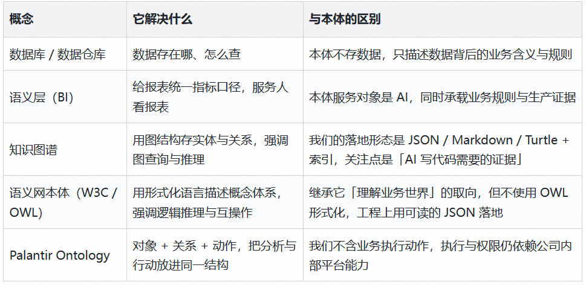
简单区分：数据库管「数据在哪」，语义层管「口径统一」，知识图谱管「关系推理」，本体管的是「让 AI 具备写对这类 SQL 所需的完整业务理解」。
3.3 本体的三层架构
我们参考 Palantir 的三层本体框架，并重新界定了每一层在数据研发中的边界：
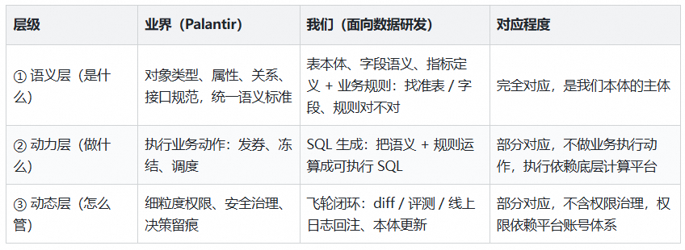
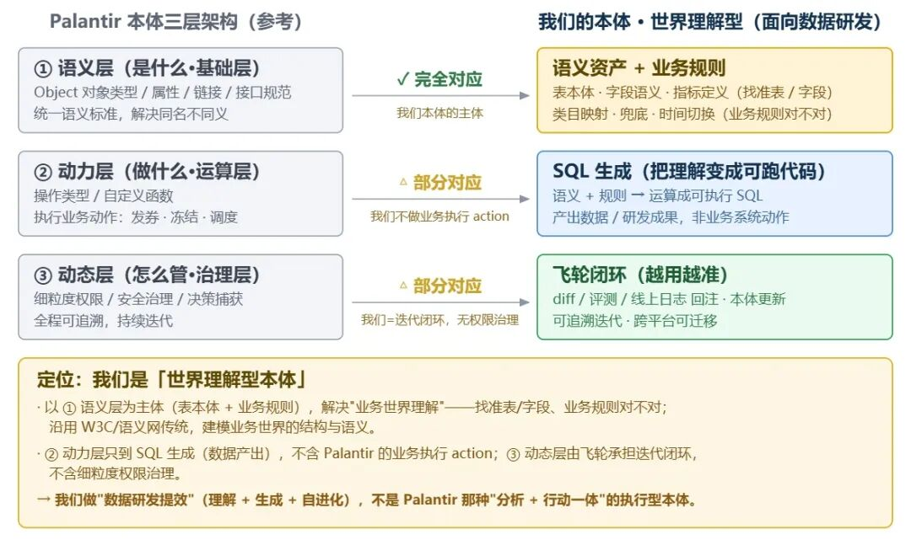
本体三层架构
3.4 本体包含的五类知识
具体而言，本体承载五类知识：
| 知识类型 | 内容 |
|---|---|
| 表本体 | 核心表的职能定义与粒度区分 |
| 字段语义 | 同一字段在不同平台下的真实含义与计算规则 |
| 指标口径 | 分子分母定义、特殊数据剔除规则、时间窗口定义 |
| 业务规则 | 跨平台类目映射、兜底逻辑、时间版本切换 |
| 生产证据 | 血缘关系、值域分布、历史 SQL 惯用写法 |
上述知识全部结构化存储，每条规则可追溯到线上代码的具体位置。
基于此，我们构建了基于本体的 AI 数据研发工具：OntSQL Agent = 本体资产 + 按需召回 + 飞轮迭代。
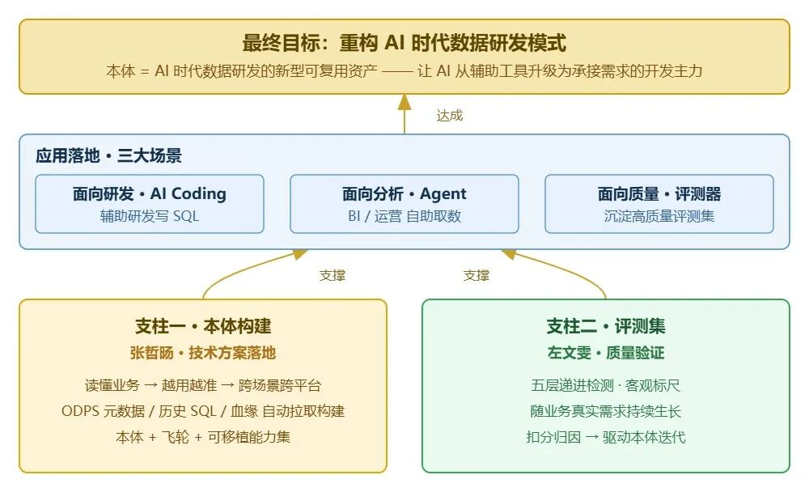
OntSQL Agent 架构
从生产代码中自动抽取本体
本体是什么讲清楚了，下一个问题：本体从哪来？
这是工程落地中最核心的挑战。我们的答案是：不靠人工逐条整理口径，而是让模型从生产资料里自动抽，再让机器反过来验证。
4.1 四种方案对比
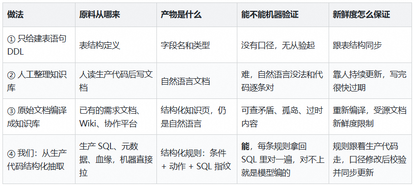
对上述方案进行逐项分析：
① 只给 DDL 无法解决语义问题。DDL里只有字段名和类型。以上述品牌归一需求为例，给出 DDL 后 AI 知道有某个品牌 ID 字段，但不知道它什么时候该用、和另一个字段什么关系、映射不上该怎么兜底。DDL给的是「表长什么样」，我们缺的是「这张表该怎么用」。
② 人工整理知识库方向对，效果好，但维护不动。以我们的真实业务场景为例，线上表逻辑和数据口径一直在变。靠人读SQL、写文档、再持续更新，写的时候慢，写完很快过期。
③ 让 AI 把文档编译成知识库是最近流行的做法，也是一些 LLM-Wiki 的建设思路：先把零散文档编译成结构化知识页，查询时优先查知识库。这个思路我们认可，本质上和我们一样，都是「先编译再查询」。但落到数据研发场景有两点不同：
- 知识来源不同。知识库依赖人写的文档，而实际生产中大量需求是语音会议形成共识、协作平台上给一句简短描述、数据同学就直接开发。更关键的是，许多口径并无文档或文档不完整，补齐文档本身的成本最高，因此我们选择直接读取生产代码。
- 产物不一样。知识库方案编译出的是自然语言知识页，例如「按层级逐级匹配」这类表述，机器无法判断其与当前线上代码是否仍然一致。需要说明的是，文档编译方案可整合多种格式的资料，覆盖面更广、建设周期更短。我们则更专注于 SQL 生成：输入为业务知识资料包，产出为SQL。
4.2 本体构建入口：核心表 + 血缘
我们不是拿到一份 SQL 就分析构建规则，然后等待下一份输入，而是从核心表进去，顺着它的上下游把该带的表和知识一起带出来。
先说入口。从业务交付表、看板展示表自动识别出这个场景真正在用的表，也就是核心表，再由数据研发同学手动补充、核实。这批表是起点，不是边界。顺着核心表的上下游又带出一批，最终本体里有四成的表，是靠血缘分析找出来、确认有价值后才建的。
以某品牌核心表为例，通过 DataWorks SKILL 读它的生产SQL，血缘信息自动解析出上游表，且每张都能自动分析它在这条链路里干什么，这就是为什么最终本体中的表资产比核心表清单多。核心表决定从哪儿进去，上下游决定能捞回多少东西。
4.3 抽取形态：结构化三元组
我们不让模型写自然语言描述规则，而要求它输出三元组。
我们的做法是从生产环境中自动抽取运行中的SQL与元数据，让模型把每条 SQL 中的业务 CASE WHEN 抽取为结构化三元组。以“店铺类型”判断为例，抽取结果如下：
- - - - - -
case_group: shop_type # CASE组
branch_order: 1 # 分支序号
condition_sql: shop_name IN (条件A,条件B) # 判断条件
action_sql: 结论A # 结果动作
source_sql_hash: bbbd38537a7ba41e # 源码指纹
evidence_sql_node: 308513553 # 生产节点ID使用结构化保存，不是因为模型看不懂自然语言，而是一句话没法校验：说不出它对应 SQL 哪一段，也说不出有没有过期。写成条件和动作，规则就能和 SQL 分支逐条对上，脚本自动对齐写法差异，算出指纹逐条落库，并绑定生产节点。
我们要的不是给人看的文档，是机器自己能查的资产。
4.4 三道关校验：专防模型幻觉
大模型幻觉在真实生产中难以避免，哪怕是旗舰模型也会抽错、也会编出 SQL 里根本没有的规则。所以抽完的规则不能直接用。
第一道：对指纹。每条规则都算一个指纹。算之前先把空格、大小写这些不影响语义的差异抹平，所以只要说的是同一段SQL，人写的和模型抽的指纹就一定一样。实测上述品牌案例中人工写的规则，模型全都抽到了，指纹条条对得上。
第二道：回溯SQL。把本体里的每条规则拿回生产SQL，看它到底对应哪个分支。要是有哪条在 SQL 里找不到落脚点，那就是模型编的，直接删掉。实测某核心表留下关键分支规则，条条都能对上SQL，没有一条是多出来的。
第三道：查格式。检查每条规则该填的字段有没有填全、格式对不对。
这三道关只解决一件事：抽出的规则和生产代码逐条对得上。
4.5 人工只在两处介入
一处是核心表第一次进本体时人工过一遍，验证、复核、补充。另一处是线上发现生成得不对时（校验规则未通过、发现逻辑冲突等），人工看一眼是不是本体的问题，再决定要不要改本体。
除了这两处，拉元数据、抽规则、对指纹、回溯SQL、表刷新后重新检查，全是机器自己跑。
把上述品牌需求 case 从头连起来看：一张核心表进去，自动带出上下游、规则、时间切换、数据血缘信息，每条规则都查得到它来自线上哪个节点，人只在最后检查一遍。
首次接入一张再难的表，只需要一个权限账号加一次人工校验；之后口径变了，机器自己能发现并提示刷新。原来最重的知识库维护工作，从人工整理变成了机器抽取加少量把关。
本体如何进入 AI 生成链路
上一章节说清了本体怎么建，这一章讲清本体怎么用。
5.1 本体资产构成
在真实业务场景中，我们自动化构建了表本体、业务规则、指标定义，外加 SQL 事实、血缘、值域等生产证据和一层召回索引。复杂业务场景的真正难点，不在选哪张表、用哪个字段，而在口径怎么定、逻辑怎么算。因此，业务规则是整套本体资产的核心。
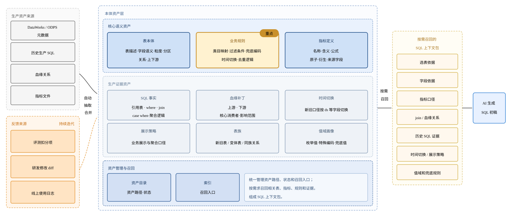
本体资产
除了表本体和业务规则，还有几类单张表装不下的知识：
- 时间切换：某业务的映射表是按业务日期选表的，某个日期之前用旧版映射、之后用新版，生产上是用 UNION ALL 加 label 字段实现的。这条规则不写在任何字段注释里，AI 不知道就会只读一张表，历史数据直接算错。
- 血缘：记清每张表的上下游和引用位置。
- 值域画像：记录字段的真实取值分布。
- SQL 事实：记录这张表惯用的写法，比如逐级降级、去重方式。
5.2 按需召回：给材料，不给硬规则
本体里上千条规则，每次写 SQL 不能全给，上下文太长，反而稀释关键信息。
这不是我们的独有发现。业界把这个问题叫注意力稀释：上下文窗口的「物理容量」和「有效容量」是两回事，一个塞满无关信息的长上下文，有效容量可能还不如一个精心裁剪的短上下文。我们的召回机制对应的正是业界所说的渐进式披露（Progressive Disclosure），只在需要时才加载需要的知识。
召回模拟的是老研发接到需求时的思维过程。 Agent 判断这是一个 SQL 生成任务后，按规则约定自动调起召回，拿到上下文包之后才开始写 SQL。召回结果包含：
- 需求相关的表本体与字段语义；
- 相关的指标口径定义；
- 触发条件匹配的业务规则；
- 历史相似 SQL 的写法参考；
- 值域、枚举、异常处理等生产证据。
以上述品牌需求为例，一次召回是七路并行的：相似实现、时间切换、血缘、值域画像、表族信息。相关度最高的那张表本体，召回没有全复制，只挑了和本需求最相关的规则，召回的规则恰好就是这个需求最容易踩坑的地方。
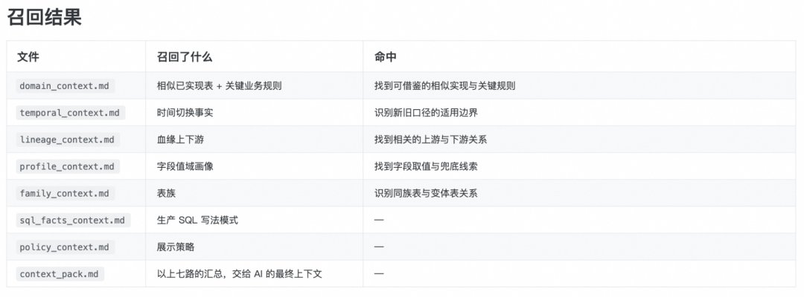
召回结果
这里有一个刻意的设计，也是我们踩过坑之后换来的：召回给的是材料，不是硬规则。
我们不改写 AI 的输出，也不强制它必须用哪条规则。早期试过把召回约束得很死，把规则写成必须遵守的指令，结果反而把模型能力限窄了：它从「聪明的 AI 工具」退化成「蠢笨的规则执行器」，遇到规则没覆盖的情况就不会推理了，生成质量不升反降。
这和 Agent 设计里「从防御到赋能」的思路是同一件事：与其用更多约束去堵错误的出口，不如把该看的资料找全，打开正确的入口。现在本体只负责供给证据，用不用、怎么用交给模型判断。
另外，召回内部是确定性的程序逻辑，召回什么不由模型临场决定，同一个需求跑多少次结果都一样。
5.3 迭代飞轮：三条反馈链路
本体不是一次性调优的产物。静态知识库一定会老化，代码重构了但知识没跟上，口径变了但规则还是旧的。为了解决这个问题，我们设计了三条反馈链路，把真实使用中的修正持续回注本体：
研发真实修改 diff：对比 AI 初稿与最终上线 SQL，把人工补的字段、过滤、join、CASE WHEN 和口径修正回流；
评测集驱动：构建客观评测集，将扣分 case 拆解为本体缺口 / 召回不足 / 模型误用 / 需求隐含条件，用来补规则、补证据、调召回；
线上使用日志：Qoder、千问办公等平台给业务使用后的提问、结果、失败日志和人工修正，补充场景规则与使用约束。
三条链路的反馈汇入反馈池，经人工确认后写回本体，驱动下一轮本体修正。
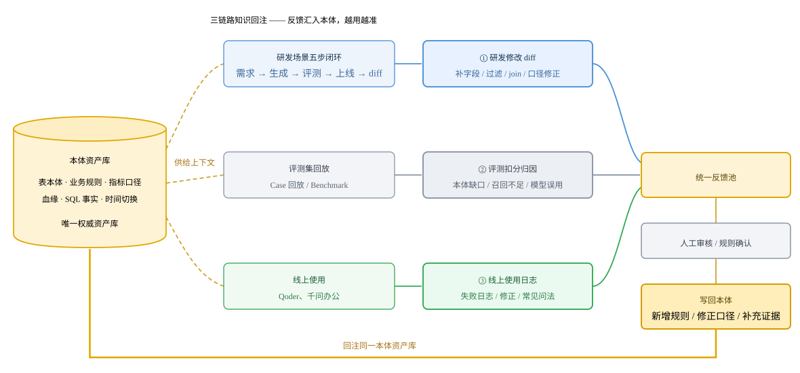
飞轮闭环：三条本体反馈链路
5.4 技术复用：跨场景、跨平台
技术复用有两个维度：生成本体的技术可跨业务域复用，沉淀的本体资产可跨平台移植。
- 跨场景复用：生成本体的技术方案不与具体业务场景绑定。同一套「自动抽取 + 飞轮迭代」能力，可以快速复用到其他业务域。
- 跨平台复用：本体不绑定 AI 平台。资产标准化为 Turtle / JSON / Markdown + 索引文件，SQL 生成日志、采纳统计、反馈、回归测试等链路均为独立 Python 模块。通用Agent等平台只需保留薄入口，读取同一套资产即可。
我们已在不同平台跑通真实需求链路，验证了入口、资产、链路均可替换。换工具不换知识，这让业务知识真正沉淀为团队的资产，而不是某个工具的附属品。
效果验证：技术评测
方案做出来不等于真的有效。我们构建了一套贴合真实业务的评测体系，从评测集构建、规则设计到效果分析，验证「本体+飞轮」是否真正让 AI 从「看不懂、写不准」进化到「读得懂、写得对」。
6.1 评测集：真实需求，持续扩充
评测集的 case 全部来自真实业务工单，每条 case 包含需求信息、依赖表、Agent 需求输入等完整上下文，并绑定已上线的生产 SQL 作为 Ground Truth。
评测集不是一次性维护的静态集合，而是通过定时抓取 + LLM 自动分类实现自动入库，随业务需求增长持续扩充。
6.2 五层递进检测
我们设计了五层递进检测，从语法到最终数据结果逐层校验。不通过时自动归因到具体层级和原因，结果回流飞轮，形成「生成 → 评测 → 归因 → 修正」的自动闭环。
| 检测项 | 检测说明 |
|---|---|
| 语法对不对 | 关键字拼写、括号闭合、函数参数完整性 |
| 表找得对不对 | 所选表是否正确 |
| 字段找得对不对 | 字段有无缺漏、指标口径是否一致、聚合方式是否正确 |
| 业务规则对不对 | 提取 GT 的 CASE WHEN / WHERE / JOIN 节点，逐条在生成 SQL 中定位 |
| 跑出的数据对不对 | 对比输出表与 GT 运行结果是否一致 |
评测链路由「拉取评测集 + 预处理」与「AI 生成 SQL + 五维评测」两个 Skill 串联，实现全流程自动化。
前者从线上评测集增量拉取 case，预处理后为每条 case 生成三份文件：评测集元数据、需求原文与 Ground Truth（下称 GT）SQL。后者在限定本体条件（有无本体、本体版本）后，由 LLM 生成 SQL 作为待评测代码。
代码生成过程遵循两条硬规则：① 禁读 GT SQL，同时禁止通过节点 ID 反查代码，防止模型直接复用标准答案；② 仅读取当前版本本体，禁止读取其他版本、共享生产版本或个人工作区版本，以保证版本间可比。
五维评测对语法、选表、字段、业务规则、数据结果五个维度分别赋权 10、20、20、40、10，合计 100 分。其中业务规则维度权重最高，因为该维度是 AI 当前最薄弱的环节，也是本体价值最集中的地方。每条 case 依据总分划分为「通过」与「不通过」两类。
引入打分机制，是为了量化对比不同版本本体的优化效果；而最终结论采用 0/1 二分呈现，则可使结果更为清晰直观。
6.3 有无本体的实测对比
| 检测项 | 无本体 | 有本体 | 变化 |
|---|---|---|---|
| 语法对不对 | 8/8 | 8/8 | 持平 |
| 表找得对不对 | 7/8 | 8/8 | ↑ 1 |
| 字段找得对不对 | 4/8 | 7/8 | ↑ 3 |
| 业务规则对不对 | 2/8 | 3/8 | ↑ 1 |
| 跑出的数据对不对 | 2/8 | 2/8 | 持平 |
语法和选表已稳定通过评测，字段维度提升最为明显，目前模型瓶颈主要集中在复杂业务规则的完整还原上。业务规则维度表面仅提升 1 分，但每个需求包含多条规则，评分按"全部命中"计算；实际拆解来看，无本体时，AI生成的映射规则基本错误，代码不可用；引入本体后，此前完全依赖模型猜测的规则分支，已通过历史代码和值域分布补齐，规则完整度有明显改善。以上述品牌需求为例：
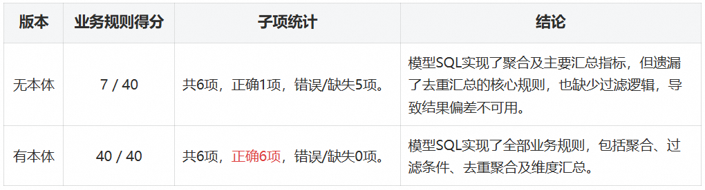
效果验证：业务落地
引入 OntSQL Agent 后，数据开发的工作方式发生了明显变化：AI承接业务理解并撰写代码初稿，研发从“逐行手写代码”转向“审核与兜底”。
需求承接统计：从需求交付节奏看，引入 OntSQL Agent 后月均需求处理量提升数倍，单需求交付周期大幅缩短。这说明 AI 不仅提升了单需求开发效率，更实质性放大了整体的需求吞吐量。
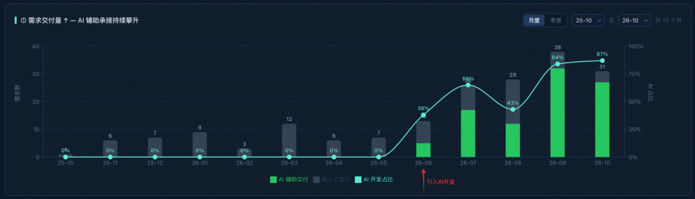
承接需求量
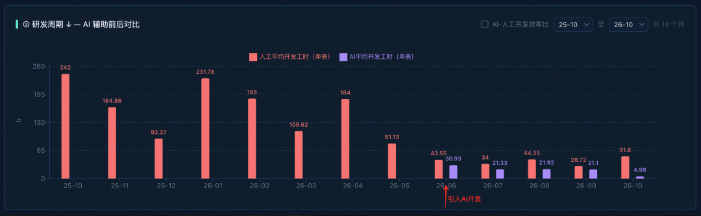
需求开发效率
AI行占比统计：月均 AI 代码行占比持续提升，从个位数提升至八成以上。这些数字共同说明，AI已经从辅助工具升级为数据开发的实际生产力。
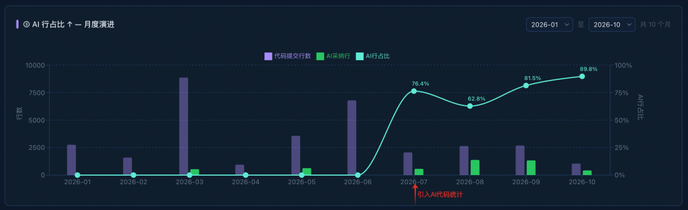
AI行占比指标统计
总结：数据研发角色的重新定义
综合全文，当前通用模型写 SQL 的瓶颈不在模型能力，而在于能否获取足够且准确的业务知识：模型不缺代码生成能力，缺的是用哪张表、取哪个字段、指标口径怎么算这些规则。模型擅长执行已经被定义清楚的规则，而规则本身需要人来定义，数据研发的「重新定义」正是发生在这条边界上。
所谓重新定义，不是 AI 取代数据研发，而是人与系统重新划分分工：模型承接确定性，人专注不确定性。
模型负责确定性、可复现、依赖信息检索而非业务判断的环节：逐行编码与语法实现，查阅历史逻辑、追溯血缘与下游影响，对齐字段口径、套用既有计算范式。这些过去占据一个需求大部分工时的重复性劳动，本质是执行既有规则，因此可以被系统稳定承接。
人负责需要业务知识输入、需要价值判断、无法从既有信息推导出来的环节：定义业务规则、做方案取舍、把关结果质量。AI越强，系统越能把人定义清楚的东西执行好；而定义的精确程度，决定了产出的质量上限。
这一分工带来的直接变化是效率：一个需求的整体耗时从数个人日缩短至约一个人日。省下的时间并非凭空消失的工作量，而是从「执行」转移到了「定义与判断」。数据研发的角色随之升级，从代码的执行者转向规则的定义者，从逻辑的实现者升级为质量的把关者。
千问AI平台-为Agent而生，驱动AI生产力 扫描下方二维码，直达千问AI平台体验
点击阅读原文即可体验！
归属：[[02-输入/按主题/AI与效率/_index|AI与效率]]